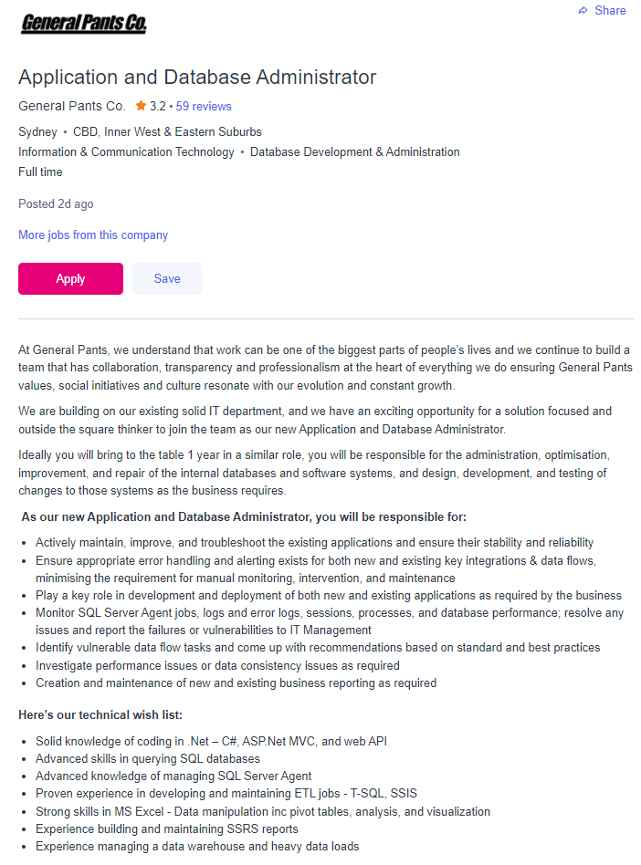

Michelle Towers
ABOUT ME
Hello! My name is Michelle Towers, I'm 28 years old and I currently live in Bendigo, Australia. I was born in Alexandra, Victoria. I'm half Australian/half British; because my dad moved to Australia from England before I was born.
The only language I speak at home is English, I do know some Italian but not as much as I would like! High school was bad for me, I regret not putting in more effort, however, I try my best to only look forwards when possible!
Due to Depression and Anxiety, my life has been on hold for a very long time; but with me starting this course, alongside Intro to Programming - I'm taking back my life!
I like to play video games of all varieties; my favourite however is Destiny 2. I met my main group of friends on Destiny 2 and together we have accomplished multiple day 1 raids. Niche flex!
Other than gaming, I love to read and draw stuff on my iPad. Drawing is one of my favourite ways to be creative! I love drawing from references.
 A badly edited pic of my cats ♥
A badly edited pic of my cats ♥
Top: Ava
Left: Madden
Right: Lily
They don't like each other much lol.
INTEREST IN IT
When I was really little my grandfather gifted me my first PC and he showed me what each part did and how they all worked together. I also was the reason that the PC broke due to fiddling around with the hardware components, but he helped me fix it.
I would play Age of Empires and The Sims on the pc all of the time and got in some trouble for lacking in school work.
Building my current computer is my favourite memory related to IT because I was so scared of breaking something and so proud when it POSTed.
I have always been my family's go-to tech person, so naturally over the years developed basic IT skills and developing my skillset more has been a goal that I've pushed aside for quite some time due to mental health struggles.
Studying at RMIT via OUA has been a really good decision for me, as someone who's extremely shy and introverted. My first couple of weeks of studying has proven to me that I am capable of doing this. I plan to finish this course alongside Intro to Programming and then go even further in my studies; doing a Bachelor of IT.
I am excited to learn more about Cyber Security and Machine Learning. I've watched countless videos on other people exploring these areas and I cannot wait to do it myself.
My previous experience in IT-related areas has just been me volunteering, my role was to transfer paper data to a database and it was enjoyable.
PERSONAL PROFILE
I like the results that I received because it speaks about being responsible and enjoying attempting to make things perfect. Creating this website is the perfect example of that for me!
It also speaks about how intuitive my type is with other people's emotions, and the ability to form strong bonds; despite being an introvert and all of my experience so far make me believe that to be true.
Notable strengths are being supportive, reliable and observant; all of which I do identify with. I did do some thinking about my patience tolerance as it's supposed to be higher than what I know it is self reflection is important to me and these test results have made me think a lot. Notable weaknesses are shyness, taking things too personally and overloading myself; again, all of which I identify with and try my best to improve on.
Going forward working in a team environment I'm going to have to be cautious of my weaknesses and speak up for any help I need to overcome them. I'd prefer a close-knit and supportive team environment and I plan on doing my best to be a contributing factor to making that possible!
Learning Style
I had never done a test like this before and it was very insightful for me. I knew that people learn differently but had never questioned my ability. Throughout schooling I did notice that my learning was greater when I was up the front of the class, paying full attention and no one to distract me.
This makes me wonder how group situations will go for me, in the case of other people messing around. I think I will step in and ask them to stop though.
I hope I can also be a positive influence on other people's learning environment as well. I try to ask relevant questions when applicable, otherwise I doubt myself too much. Second-guessing myself is one of my biggest flaws when it comes to schooling. I try my best to push through it though and definitely will continue to do so in group environments.
Note-taking, especially making it **pretty** is something I enjoy doing and I always make time each week to satisfy this need. I feel like it helps me learn more; re-writing all of my notes, condensing them and sorting them how I like.
The Big Five
I'll be honest, this test made me a bit sad to reflect on how Depression and Anxiety impact my life and personality a ton.
The test shines a light on agreeability as a good thing, which I do think can be in small doses. I do fear however that I'm too much of a pushover.
I am worried that this would reflect in my contribution to a team environment. For example: maybe someone speaks over me and I'm too shy to speak again or the group wants to go in a certain direction that I believe isn't the most efficient. I know that I have a habit of doing this, especially in newly formed groups and it has been on my mind.
I do try my best when I can to overcome these thoughts and feelings, but everyone has down days and this is again where I will need to reach out for support if I need it. I hopefully will be able to surround myself with a supportive team.
All of these tests have been insightful and thought-provoking. I know where I started before I took this giant step forward in my life and I do have an idea of where I want to end up. That excites me and gives me hope.
IDEAL JOB
 Here is the job listing that I'm using as my example.
A Database Administrator is in charge of maintaining databases. They perform duties such as optimising, modifying and upgrading database systems to ensure optimal efficiency, reliability and security. They are also responsible for creating, designing and testing new database systems.
This job appeals to me because I enjoy writing, troubleshooting, learning and teaching. It seems like a good way to incorporate all of that into one role. I'm a bit of a perfectionist as well and I think that will help me thrive in this type of job.
The skills and experience required for this job are easy to improve upon with a lot of effort and determination and that motivates me greatly. Skills such as critical thinking, problem-solving and the ability to keep track of multiple things at once are greatly needed. Experience usually requires a Bachelors degree in any related IT field, for example; Network Security, Database design or Networking.
To start my pathway towards this type of job I'm going to have to complete my Bachelors of IT and then either go for my Masters or do another degree that is more focused on Database networking.
Over the next 3 years, I'm looking forward to learning how to work better in team environments, developing my critical thinking skills and learning how to troubleshoot any issues without needing to Google. [lmao at that thought]
My plan, outside of the typical learning that I will be receiving over the next couple of years is to read up on SQL or watch videos on SQL too because it seems to be needed and I'm always willing to try to learn new things. Aside from that, I enjoy watching YouTubers make 'day in my life' videos so I'm sure that I could find people in my field of interest who do share their lives like this. The internet is a great source of learning for those willing to take the step, and I am willing!
As for gaining experience, I briefly volunteered at a community center where I did do work sort of like this and I enjoyed it. I could look into volunteering there again. It was a great learning experience for me.
MY PROJECT IDEA
Overview
My project idea is to develop a water reminder computer program, that if it receives little to no input; will do something to mess up the game I'm playing. It could maybe wiggle the mouse, or even ALT+F4 if the lack of input was bad enough. This would be very useful for me because I'm really bad at remembering to drink water, and that only gets worse if I am playing games on my PC. I have tried water reminding apps on my phone but when I am playing on my PC my phone is either on silent or I simply don't pay attention to it. With this program, it's right in my face all the time.
Motivation
Over the years as gaming has become more popular, the amount of time that the average person spends on video games has also increased.
"Gamers play for an average of 1 hour 22 minutes at a time. The average longest time gamers have ever consecutively played is four hours 19 minutes. 10 percent have played for 10 or more hours consecutively." (Market Research: The State of Online Gaming – 2019, 2019)
Video game addiction is slowly becoming a problem, especially with how young children start to play games now.
"a very small proportion of the general population (between 0.3% and 1.0%) might qualify for a potential acute diagnosis of Internet gaming disorder." (Przybylski, Weinstein and Murayama, 2016)
I know personally if I'm too caught up in a game that I'm usually not thinking about anything other than what I'm playing. This is why it's no surprise that more and more people are getting injured, or even dying due to lengthy video game sessions. Dehydration is a big key factor in these situations, on top of not moving or taking even short breaks.
"Medics were called, and Tyler was taken to the hospital where he had an IV attached to him to replenish his fluids. He was diagnosed with severe dehydration." (Castillo, 2012)
"Lee also ate and drank very little during his gaming binge. After his friends had found Lee, he told them he would finish up his game and go home. He shortly collapsed, dying of heart failure from both exhaustion and dehydration." (Nguyen, 2017)
Drinking water and moving around after a brief amount of time on my PC are two things that I always do try to remember to do, yet somehow always end up forgetting. I know, forgetting to drink water - who does that? I'm not convinced that I'm the only person who experiences this though, and my project; albeit a little silly is aimed towards tackling real problems.
Description
My overall idea is to design a program that will not only make you want to drink more water due to its annoyance but also feels rewarding to do so as well. I have thought about how I could achieve this reward type system and I think streaks is a good idea to start with. People love streaks, just take a look at Snapchat! It encourages commitment and provides a sense of loss if you fail to adhere to it. I have also thought about more cutesy things, such as at the start of the day you start with a desert and the more water inputs the user submits; the lusher the program becomes until it is a rain forest.
The punishment side of the program could do something as small as jittering your mouse while you play, which is noticeable but not as severe as ALT+F4'ing would be! I have thought of other punishments as well, such as music changing at random or even annoying sounds that play periodically. I don't want to make it so annoying that users won't use it though. If it is too annoying users won't bother to build up streaks, the user could easily justify their inability to accept change easily and nothing will change.
I do have a sort of layout in mind as I described earlier, it would start with a very muted colour palette and over the day with proper use would transform into lush greens with rainfall and rain sounds. ASMR is relaxing, so that is something that could also be looked into as a reason to keep the app running in the background. I would prefer a more modern type look when it came to the user interface, something I'm hopeful that could be achieved as well as my desert to lush greenery idea.
Focusing more on the streak system, I have thought about stickers that the user can get randomly each day; with high streaks gaining higher chances of drops. I have also thought about a currency-type system with streaks, where the user could buy a 'forgive' option if they did happen to not hit the daily goal. The currency outside of this forgiveness system could be used for small things such as unlocking new ASMR sounds, motivational quotes, or even eBooks. All of these would be free content that the user could get outside of the app, so I guess I just have to hope that the user is someone who wouldn't go out of their way for this content usually.
The dream would be to be sponsored by any company involved in eBooks and work with them to supply to a larger audience. The amount of water that users input daily should differ depending on their sex, weight and height; so not every person's daily goals would be the same. Data could be collected via Fitbit or Apple watch statistics too. I think this has potential outside of gaming as well but I'm an avid gamer so I'm my target audience.
Tools and Technologies
To develop the program I could use the programming language Python, which I am currently learning in my other course: 'Intro to Programming'. There are plenty of tutorials that could make this an option for me and I know from looking it up that Python can control the mouse and keyboard inputs. A less GUI-focused version, a rough draft if you will; could be done via the open-source software: AutoHotKey. I do know how to use this quite well and have used it in the past for automating inputs in Destiny 2 (because who likes holding down F to delete things repeatedly!)
Skills required
A broader knowledge of Python is needed for me to understand how to develop the program, especially the GUI part of it. I know that I could do it this way given enough time though. I love learning new things and being creative is important to me.
If I chose to do it in a draft version, using AutoHotKey would be easier. I already have previous experience with AHK, however just because it's easier; doesn't mean it's the way that I should go. I feel like losing the GUI would ruin the project for me because I am keen on the sound and images that I picture when I think about the project.
To find anything that I needed, I would Youtube other people creating their projects using Python or AutoHotKey. There are tons of documentation and discussion boards for both of these, so I do think that I would be okay if I was to develop my project.
Outcome
If my project were to be successful, the outcome that I'm hoping for would be my water drinking habits increasing! This would greatly solve the problem that I struggle with as well as help to calm down my anxieties about gaming and long hours. For other people, the outcome I'd like for them is that they also increase good habits and get a relaxing/enjoyable experience using my project daily.. as long as they're sticking to the goals though!
If the project became something other people would like and use daily, sponsors from eBook companies would be amazing. I love to read and hopefully, that would also tackle the other problem I have: not enough reading because I'm gaming too much haha. That's something that I'm sure other people experience too. I just want to help people like me, I'd be very happy to change another person's life for the better.
REFERENCES
Website
NERIS Analytics Limited 2011. Free personality test, type descriptions, relationship and career advice | 16Personalities, 16 Personalities, Accessed 13 March 2022. https://www.16personalities.com/ website
Brooksbank, C., Ludwig, R. and Dallakian, P., n.d. Learning Styles Quiz. Emtrain.eu, Learning-styles, Accessed 13 March 2022. http://www.emtrain.eu/learning-styles/" website
Openpsychometrics.org. n.d. Big Five Personality Test, Big Five Personality Test, Accessed 13 March 2022. https://openpsychometrics.org/tests/IPIP-BFFM/" website
W3schools.com. n.d. HTML Tutorial, W3Schools, Accessed 13 March 2022. https://www.w3schools.com/html/default.asp website
W3schools.com. n.d. CSS Tutorial, W3Schools, Accessed 13 March 2022. https://www.w3schools.com/css/default.asp website
SEEK. n.d. Application and Database Administrator in Sydney - SEEK, Seek, Accessed 14 March 2022. https://www.seek.com.au/job/56257796?type=standout#sol=f8b2360f184eae1a23fff660ade02d4d566098eb website
Database & Systems Administrators & ICT Security | JobOutlook. n.d. Home | JobOutlook, Accessed 14 March 2022. https://joboutlook.gov.au/occupations/database-systems-administrators-ict-security?occupationCode=2621 website
Bianchi, F., n.d. Coolors - The super fast color palettes generator!, Coolors.co, Coolors, Accessed 14 March 2022. https://coolors.co/ website
Report
Castillo, M., 2012. Ohio teen hospitalized after playing video games for at least 4 straight days. Cbsnews.com. Accessed 14 March 2022. https://www.cbsnews.com/news/ohio-teen-hospitalized-after-playing-video-games-for-at-least-4-straight-days/ website
Nguyen, L., 2017. 15 People Who Have Died Playing Video Games. TheGamer. Accessed 14 March 2022. https://www.thegamer.com/15-people-who-have-died-playing-video-games/ website
Przybylski, A., Weinstein, N. and Murayama, K., 2016. Internet Gaming Disorder: Investigating the Clinical Relevance of a New Phenomenon | American Journal of Psychiatry. American Journal of Psychiatry. Accessed 14 March 2022. https://ajp.psychiatryonline.org/doi/10.1176/appi.ajp.2016.16020224 website
Limelight.com. 2019. Market Research: The State of Online Gaming – 2019. Accessed 14 March 2022. https://www.limelight.com/resources/white-paper/state-of-online-gaming-2019/ website